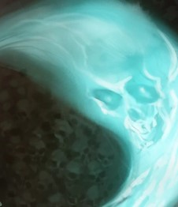
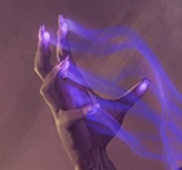
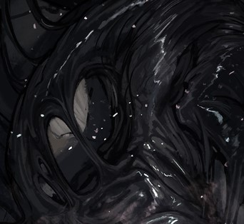
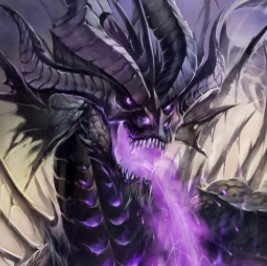

Souls of the many to aid the soul of one. An ugly mockery of the once grand creation.
Tier 1: Ghosts in the ShellThe innate ability to speak with the deceased. |
||
 Soul InvocationTo invoke one of your souls, you need to use a bonus action. You can only have a number of souls invoked equal to your level /4 rounded down. To dismiss a soul you need to use a bonus action. |
 Souls CollectorTherakirs powers allow him to manipulate souls to his bidding. There are three modes of engagement. |
|
Tier 2: Born of the grey mistI just.... turned around, and an arrow pierced my scalp... Blood, but no pain.... Why is it so hard... to
see... |
||
MistbornYou are now breathing grey smog out of your lungs. As a reaction you can inhale the mist into your body, automatically dodging an attack after it is confirmed to hit. Doing this will reduce your max health by your level, and give you disadvantage on wisdom saving throws. The max hp reduction is removed after a short or a long rest. The wisdom save disadvantage is removed at the end of your next turn. |
Misty RebirthOnce per long rest you can pull a soul out of the mist with the bonus action. This soul is unworthy and will return there at the end of your turn. You can shatter it as a part of this action to gain the benefits of “Shatter shoul”. |
|
Tier 3: Frail form of the flawed, gluttonous vessel.During the night Therakir wakes up, agony throughout his entire body. It feels like the stitches holding his form together are tearing apart, rending both body and soul. But agony passes, pain, is but a path to freedom. If the morbid anguish comes from within, it just means your invulnerability from without. Nothing will hurt you if you just push through the burn... again.... and... again............... |
||
 Torn at the StitchesEvery time you subjugate a worthy soul you roll a D20. Your max hp is reduced by the amount rolled until the next long rest. A ninths of the reduction rounded down(could be 0) is permanent. |
 Bloated ReleaseEach time you take damage you store a d6 of that damage as necrotic damage. As a reaction to damage taken you can release the stored damage as a Dex save equal to (8+Constitution modifier+Proficiency modifier). When you release, you take all the damage stored yourself. This damage reduces your Max HP until the next short or long rest. Taking a short or a long rest has a 50% chance of releasing the Bloat involuntarily at the start of the rest. |
Lord Tiber Merville
Eons ago were still a clear memory for Tiber, born into the lap of luxury in a kingdom, the name of which
was long forgotten by time and himself. His ambitions however were further than anything his nobility
promised. Young boy craved knowledge above all else. He quickly devoured everything in his fathers
study, soon being sent to an Arcane Collegium. Unfortunately talentless in the ethereal arts, he did pick
up some abilities, that he would use for practical purposes. But reading everything the Collegium had to
offer still didn’t numb the craving for more. |
Lady Gia VistirA soul filled with unbridled ambition. Gia at a very young age was enticed by the prospects of conquest,
promised by the demagogues of the Asteri Dominion. Married to Fabian Vistir, she sought to further her own status. |
Lady Priscilla Deranus
Priscilla saw her fathers devotion to the crown as short sighted. |
Arkur-Hunter of the SymmetryA soul of an Artificer, that went docile after Therakir has absorbed it. Its energies have a wierd vibe to them. |
The Dark KingSoul of the Dark King |
Arok the Allmighty, he is mine, his voice quieter than mine... For now.
Passive
Voice of the Almighty
You can speak with the voice of Arok. To switch you need to use an action. When you are, ALL creatures
moving in your direction are slowed by 10 feet. Your voice is heard within 1 mile this way. Your whisper
– 100 meters.
Strength of the Almighty
Your life force is infused with the vitality and power of the Progentor. You gain extra 3 HP per player
level. Your damage dealt is permanently increased by your level.
Pride of the Almighty
Arok is never truly subjugated, never enslaved. He will forever be a power within you, seeking to
consume the individual.
Every time you use non-passive abilities from the “soul of the draconic progenitor” you roll a d100. If
you roll below 1, Arok will overtake your essence for the number of days equal to your level, then you
can attempt to take control back from him at the start of every day with a single wisdom check of 20,
upon a failed attempt the DC is increased by 2. Every subsequent use of the abilities before the long
rest increases this DC by 12. Once Arok overtakes you 3 times, your own essence dissolves within his
greatness, no saves possible. Upon a long rest the DC is decreased by 3.
Abilities
1)Draconic Hubris
(Action)
Arok can match armies blow for blow, effortlessly sweeping nations off the map. You force every
creature of your choice within 100 feet to make a Wis 24 saving throw. On fail the targets are forced to
attack you for 10 minutes, and per every creature that fails you gain 50 temp HP (stacking). At the end of
their turn, the affected creatures can repeat the saving throw (with advantage if dealt damage by
anyone but your character), if all of them succeed, your temporary HP is removed.
2) Draconic Justice
(Reaction)
When someone dares to impact the progenitor, they will be met with horrifying retribution.
If you have been slighted by an attack of an enemy, you can use your reaction to make a single melee
attack with your weapon. If you hit you deal damage in number of d4s equal to half the damage you
received.
3) Draconic Atrocity
(Action)
The ones beneath you are less than toys to be broken. Less than bugs to be squished. Less than a speck
of dust compared to your greatness.
You charge up your chromatic breath. At the end of your next turn you will fire a 3 mile long cone of a
chosen element. The affected creatures need to make a DC 24 dex save. On fail they take a number of
d6 in damage of that element equal to 20 times your level.
4) Draconic Vitality
(Action)
Your life-force is incomprehensible, immeasurable, monstrous. If they dare to strike you, you will come
back at these critters with power to show futility of their actions.
You double your Max HP, and restore yourself to max HP.
5) Draconic Tyranny
(Action)
It is not tyranny to stand above those born to be crushed and serve beneath your feet.
You unleash a crippling roar around you that instantly kills all creatures of your choice within 1 mile with
current health equal or lower than thrice your player level.